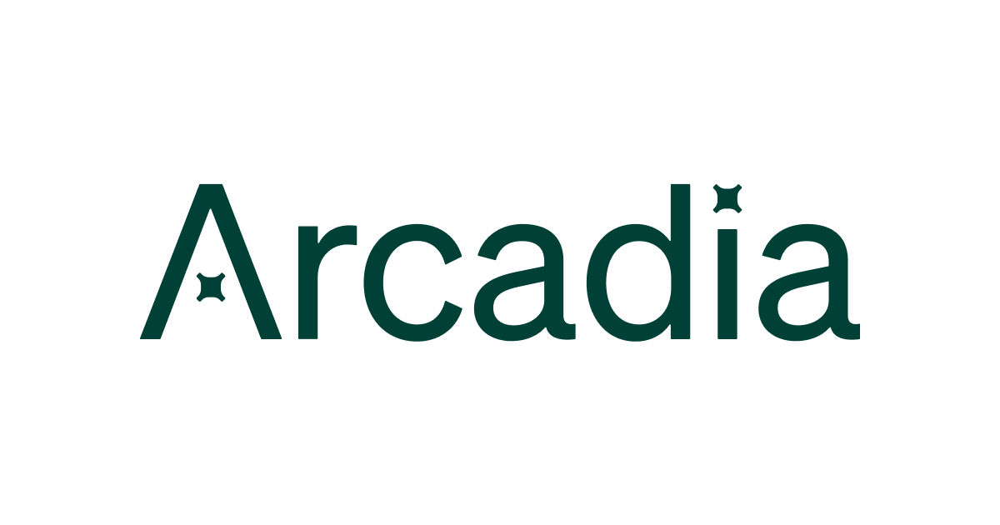
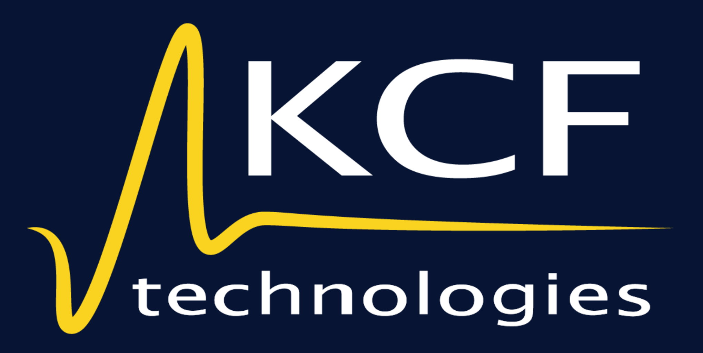
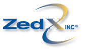

Expanded Resume
On this page you can learn more about the projects and environments that I have previously been a part of.
Senior Site Reliability Engineering Manager
@ Arcadia
I'm currently working with Arcadia, as a Senior SRE Manager on the R&D Team. Arcadia is laser focused on growing community solar programs across the united states as well as creating business class green energy APIs for ourselves and other businesses to build intelligent tools and products. If we succeed, it means the traditional power gen industry monopoly is losing power and we as a nation and world are on the right path to cleaning up our power supply and consumption. It is a great project and team to be a part of and I highly recommend joining with us if the opportunity arises. However, due to the turbulent nature of the markets and slowdowns in the solar industry, we are currently not hiring in the US. There has been a massive effort put on engineers to reduce cost and increase efficiency, which has been a great challenge and learning experience for me. After a large merger last year, we are struggling to integrate our systems, processes, and hardest of all, our cultures. It seems we've mostly abandoned the values of a highly opinionated laser focused startup for a bland enterprise with conflicting north stars, I'm still hopeful that we can get back on track and continue to grow and succeed.

Senior Software Team Lead: Development Operations
Previously I spent time working with KCF Technologies, as a Senior Software Team Lead of the Cloud Operations and Reliability teams. The company produces IoT Sensors and a SaaS Platform for analyzing industrial machine health data. All of this data is collected in our AWS cloud service and processed with a mix of Lambda Functions and containers running on ECS Fargate and now migrating to Kubernetes. The data is all stored in a nearly 120+ node, 300+ TB Cassandra DB cluster. When I joined the team, the chief cloud architect was doing all the infrastructure as code and running an entire department, including Corporate IT. Within 2 months, I was able to take on all of his cloud duties so successfully that I’ve become a team onto myself. Since then, I’ve become a team lead and been instrumental in getting new team members onboarded and productive. I’ve also been able to adapt our Terraform code to work for all projects while being safer to deploy, such that we have CI/CD handling stage and prod deployments for both our infrastructure and product code. Additionally, in my spare time, learned Kubernetes, and brought this back to our team as a way to converge on premise and cloud deployments, saving time and money, while allowing us to get features to customers quicker.
KCF lives and breathes under 3 simple values that dictate how everyone within the organization is to approach work and problem solving. They are Smarts, Grit, and Drive. I've learned a lot on all 3 of these values with my time at KCF and will carry them as personal tokens of ambition and success throughout my carear.

Senior Site Reliability Engineer
Early in 2018, after receiving an urgent request for help from my previous manager at Blackboard, Inc, I re-joined the team as a Senior Site Reliability Engineer. Blackboard was in the midst of some organizational changes which shifted some very large and exciting mass communication platforms to the local office.
I was a team lead that managed 3 separate products, all Linux based. As a suite, they annually send over 2 billion messages (Phone, SMS, Email, Push to Apps) and continue to grow. All of these products exist in Amazon Web Services cloud and has granted me a wonderful learning opportunity. With the growing number of tragedies and the need for fast and reliable mass communication in the K-12 market, the focus was on my team to make sure this product performs above and beyond customer expectations. The only way I could see a team of 3 doing all of this, was by focusing on automation to reduce cost, toil, time to recover while adding smart tools and metrics to broaden our understanding of these applications and how we can tune them to be even better.

Site Reliability Engineer
@ OmniTI
I worked at OmniTI Computer Consulting as a Site Reliability Engineer. At OmniTI, we hosted websites and databases for external clients on our own branded fork of Solaris/Illumos called OmniOS. From security patches to deployment to system life cycle, we maintained all hosting responsibilities. Being in such a unique environment taught me a lot of self-discovery skills, where there is not always a well-defined answer but I still needed to resolve the problem in order to make our selves and our clients happy. I have also greatly enjoyed contributing and supporting an open source project that is used by many the world over. It gives me great satisfaction to see the community take off and build from what OmniTI had envisioned.
Senior DevOps Engineer
Before joining OmniTI, I worked for Blackboard, Inc., as a Senior DevOps/Systems Administrator within their K-12 Content Management Services Division, with my primary focus on five legacy products housed in a separate datacenter. At Blackboard, I learned a great deal and been taught how crucial up-time is to a business’s image and overall success.
The environments I worked with supported hundreds of thousands of daily visitors and users. This was a huge environment with many complexities, non-standard oddities, all with the constant threat of being a high visibility DDoS target. In my pursuit of keeping with Blackboard’s goal of near perfect up-time, I turned a hard situation into a great learning experience for me. There was barely a day that went by that we are not fixing some new issue, it can be very overwhelming at times as we were in charge of everything from server layer to storage to network and virtualization, but also extremely rewarding.
I tell you all this because I want you to understand that I had taken this environment as a personal challenge to improve my own skills. To that end, I built Ansible, Python, and Bash scripts to automate the environment such as setting up LDAP on over 200 Linux hosts. I wrote a Python script that self-heals a flaw in one of our High-Availability file storing solutions. When I joined in July of 2017, I discovered their Nagios instance that had over 600 critical errors, I fixed all those issues so that Nagios was down to only 2 outstanding problems. When we repeatedly were taken down by DDoS and had no logging infrastructure to review what occurred, I took it upon myself to install ElasticSearch, Logstash, and Kibana to record all traffic, which led to us being able to defend ourselves much more effectively, while shutting down a lot of dangerous internal communication that did not need to be occurring. Within a few months of working in this position, I had become a primary source of knowledge and taken on a leadership role within our small group.
There are many people that would look at a situation like this and run away, or bury their head in the sand and just wait until the product is shut down, but I reject that line of thinking. The only way to make my job easier was to fix the problems, nothing else would suffice and nothing else would meet the goal of providing as close to perfect up-time as possible. I look forward to the next challenge out there on my life’s journey.
Systems Manager
For about 3 years, I worked at ZedX Inc - Now owned by BASF - a high-precision meteorological/agricultural based information systems company. In my time at ZedX, I went from a Junior Administrator to Systems Manager, responsible for all parts of our network, hardware, linux servers, databases, application performance, and desktops. At ZedX we almost exclusively used Linux and open source technology to make our products and meet our business needs.
Despite being a small company, I managed an enterprise level data center comprised of over 100 Virtual and physical machines. We also stored over 100 TBs of data for our applications, the majority of that resided on our Netapp SAN. We were able to guarantee over 99.9% uptime to all of our customers using our 24/7 web products while keeping a heavy hand in research and development of new technologies.
At ZedX, I worked extensively to implement automation, auto-recovery, smart alerts, industry-standard security practices, and increase the ability for our developers to do their work. I loved the challenge of working for a small company that forced one to be flexible and learn many different technologies, positions, and responsibilities. I believe my work at ZedX gave me a rock solid foundation and an incredible aptitude to take on any challenge that comes my way.

Read more on my Blog
Thanks for reading my professional history, but the fun doesn't stop here, oh no. you can view more information about lessons learned and neat technology that I like to work with, check out my blog!